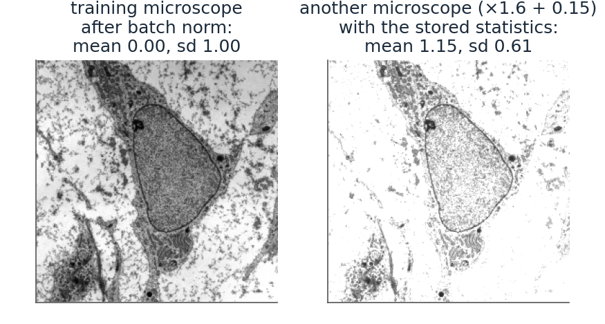
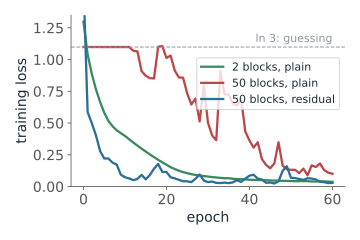
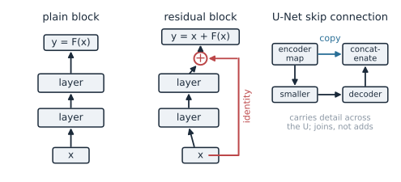
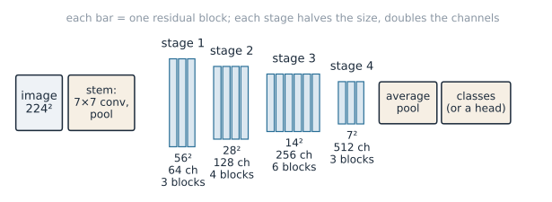

Initialisation, normalisation and residual connections
Image analysis
About this lecture
Deep networks are hard to train for a reason that has nothing to do with the data: through many layers, signals and gradients shrink or explode. Three fixes, used in almost every modern network:
sensible initial weights (variance ∝ 1/fan-in);
normalisation layers: batch norm and layer norm, and the batch-statistics trap at test time;
residual connections: y = x + F(x), the idea behind ResNet and every deep network since.
Slides titled The math give the formulas and proofs; the ideas are complete without them.
Linear (a = z of the layer below, mean 0): keeping \operatorname{Var}(z) needs n\sigma^2 = 1, \sigma = 1/\sqrt n.
ReLU: for z symmetric about 0, \mathbb E[\text{ReLU}(z)^2] = \tfrac12\mathbb E[z^2], so n\sigma^2 = 2: \sigma = \sqrt{2/n} (He et al., 2015).
Backwards, \delta_i = \sum_j W_{ji}\delta_j\,\varphi'(z_i): the same argument with the fan-out. Glorot and Bengio (2010) compromise with \sigma^2 = 2/(n_\text{in} + n_\text{out}).
These keep the size only on average and at the start; training changes the weights. Hence normalisation layers.
Try it: a deep stack
Batch normalisation
Do not hope the size stays right: make it right, in every layer. Batch norm takes each unit’s sums z over the examples of the mini-batch and
subtracts their mean, divides by their standard deviation;
then multiplies by a learned scale \gamma and adds a learned shift \beta.
Now the initial gain hardly matters: gain 1 and gain 2 give the same size, 0.71, at every layer (slide 2, dashed).
During training \mu and \sigma^2 come from the batch; a running average (\mu_\text{run} \leftarrow 0.9\mu_\text{run} + 0.1\mu) is kept for test time, when the stored values are used instead.
Backpropagation goes through \mu and \sigma too: \partial\mathcal L/\partial z_n = \frac{1}{\sigma}\big(g_n - \bar g - \hat z_n\,\overline{g\hat z}\big) with g_n = \partial\mathcal L/\partial\hat z_n, bars = batch means.
Scale invariance: W \to cW changes z \to cz, \mu \to c\mu, \sigma \to c\sigma: \hat z is unchanged (Ioffe and Szegedy, 2015).
Why training gets easier
Every layer sees inputs of a fixed size, whatever the layers below do while they learn.
The scale of the weights no longer matters for the forward pass, so larger learning rates are safe and bad initial gains are forgiven.
The noise of the batch statistics acts as a mild regulariser.
Not a cure for everything: in the demo, gain 2 with batch norm keeps the activations at 0.71, but the gradient still grows by about 10^4 from layer 50 down to layer 1. Very deep networks need more: residual connections (below).
Layer normalisation
Normalise each example over the units of the layer instead (blue row): mean and standard deviation of one example’s values.
Needs no batch: the same computation at training and at test time, for a batch of one.
Image networks also use group norm (groups of channels, per example) and instance norm (each channel of each image separately).
An example: the values (1, 3, 5) become (-1.22, 0, 1.22); so do (9, 13, 17): layer norm removes brightness and contrast of the whole example.
The batch-statistics trap
A batch-norm layer on 8 \times 8 patches of the micrograph, statistics stored from 500 training patches.
New patches, stored statistics: mean 0.03, sd 0.98. Fine.
One image in training mode (a batch of 1): every output is 0. The image normalised away.
Another microscope (grey values ×1.6 + 0.15): mean 1.15, sd 0.61. Every later layer sees inputs it never saw in training.
Statistics re-estimated on 50 patches of the new microscope: mean 0.08, sd 1.03 again.

Image: transmission electron micrograph of a mesenchymal stem cell, Robert M. Hunt, CC BY 3.0, via Wikimedia Commons.
Rules at test time
Put the network in evaluation mode: batch norm uses the stored statistics, not those of the test batch. A forgotten switch gives results that change with the batch size and with the other images in the batch.
Stored statistics belong to the training data. A new microscope, stain or camera shifts them: the classic way a network “fails on our new images”.
Remedies: normalise the input images the same way (the contrast unit), augment with intensity changes (the augmentation unit), or re-estimate the statistics on unlabelled images of the new setting (no retraining).
Layer, group and instance norm have no stored statistics: no trap, at the cost of removing more of the information in the absolute intensities.
Batch normalisation as pseudocode
training (a batch z[n][j], n = example, j = unit):
for every unit j:
mean = average over n of z[n][j]
var = average over n of (z[n][j] − mean)²
z[n][j] = gamma[j] · (z[n][j] − mean) / sqrt(var + eps) + beta[j]
stored_mean[j] = 0.9 · stored_mean[j] + 0.1 · mean (the same for var)
test (any number of examples, even one):
z[n][j] = gamma[j] · (z[n][j] − stored_mean[j]) / sqrt(stored_var[j] + eps) + beta[j]
Layer norm: the same, but the averages run over j for each n, and nothing is stored.
Deeper is not always better
More layers can represent more. But a deeper plain network often trains worse, even on the training data: the degradation problem (He et al., 2016). Not overfitting: the training loss itself is higher.
The course code, a narrow network (16 units) on a three-class spiral, 60 epochs:
training loss after 60 epochs
2 blocks, plain
0.037
20 blocks, plain
0.131
50 blocks, plain
0.101 (stuck at ln 3 for 12 epochs)
20 blocks, residual
0.022
50 blocks, residual
0.029

The residual block: y = x + F(x)
Instead of replacing x by F(x), a block adds a change to it: y = x + F(x). The layers inside learn the change (the residual), not the whole new representation.
Doing nothing is easy: F = 0 is the identity. A deep residual network is never worse than a shallower one, because extra blocks can stay close to 0.
Each block starts small (its weights scaled down, or its last layer at 0), so at the start the network is almost the identity, and the signal arrives intact at the top.

Why gradients pass through many blocks
Backwards through y = x + F(x): the gradient reaching x is the gradient at yplus what comes back through F. The identity path passes it on unchanged.
Through 50 blocks there is a direct path from the loss to every layer, with no multiplications by small slopes.
Demo: 30 sigmoid layers, plain: gradient at layer 1 is 10^{-18} of the top. With residual connections: 1.0.
Course code, first batch, 50 blocks: gradient at the first block 10^{-4} (plain) against 0.14 (residual).
The math: gradients through residual blocks
Blocks \mathbf x_{l+1} = \mathbf x_l + F_l(\mathbf x_l), l = 0, \dots, L-1. Then
Expanding the product: the identity term gives \partial\mathcal L/\partial\mathbf x_L itself; the gradient reaches every block directly, plus corrections through the blocks. A plain stack has only \prod_k J_{F_k}, which shrinks or grows geometrically.
With small blocks (\|J_{F_k}\| \ll 1, e.g. weights scaled by 1/\sqrt L) the product stays close to I.
Each F_k only has to learn the change \mathbf x_{k+1} - \mathbf x_k; near-identity mappings are easy to reach from small weights.
Try it: plain against residual
ResNet in one picture

Each block: two 3\times3 convolutions with batch norm and ReLU, plus the identity. The first block of a stage halves the size and doubles the channels; its shortcut is a 1\times1 convolution with stride 2, so that x and F(x) match.
Deeper versions (50, 101, 152 layers) use bottleneck blocks: 1\times1 conv down to fewer channels, 3\times3 conv, 1\times1 conv back up: cheaper per layer.
ResNet won the 2015 image classification challenge with 152 layers; before, about 20 layers was the practical limit.
Residual networks everywhere
Feature encoders: a pretrained ResNet is the encoder (backbone) of many segmentation and detection networks; the cell networks day uses such encoders, and Cellpose’s U-Net has residual blocks.
Transformers (attention unit): every attention part and every per-token network is wrapped in a residual connection with layer norm, x + F(\text{LN}(x)); that is what lets them be stacked 12, 24 or more times.
Diffusion models (diffusion day): their U-Nets are built from residual blocks.
The rule of thumb: if a network has more than about 20 layers, it has residual connections.
Residual vs U-Net skip connections
Both are called “skip connections”; they do different things.
residual
U-Net skip
connects
input and output of one block
encoder and decoder at the same resolution, far apart
combines
adds: x + F(x)
concatenates channels
purpose
gradients flow; learn changes
bring back fine detail lost by downsampling
A modern U-Net has both: residual blocks inside, skips across (segmentation networks).
Summary
Idea
In one line
Deep stacks
each layer multiplies the size; 50 layers turn 0.7 into 10^{-8}
Initial weights
sd = gain/√fan-in: gain 1 (linear, tanh), \sqrt2 (ReLU)
Vanishing gradients
the gradient shrinks the same way going back; sigmoids are worst
Batch norm
each unit over the batch: mean 0, sd 1, then learned scale and shift
Test-time trap
stored statistics; a batch of one, or a new microscope, breaks them
Layer norm
each example over its units: no batch, no stored statistics
Degradation
a deeper plain network can train worse, not only test worse
Residual block
y = x + F(x): learn the change; gradients pass through the identity
ResNet
stages of residual blocks; the backbone of many later networks
Next: the data side of training: overfitting on small data sets, and augmentation.